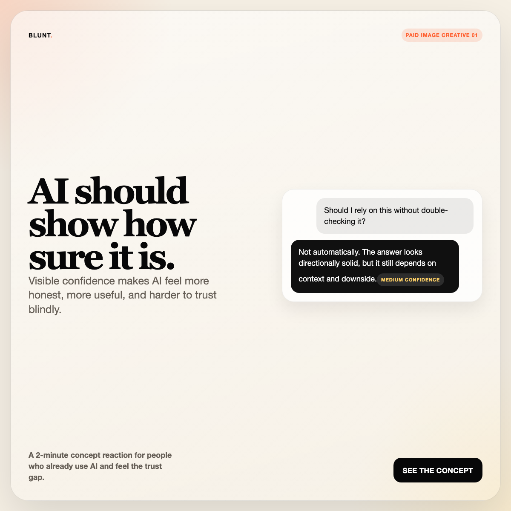
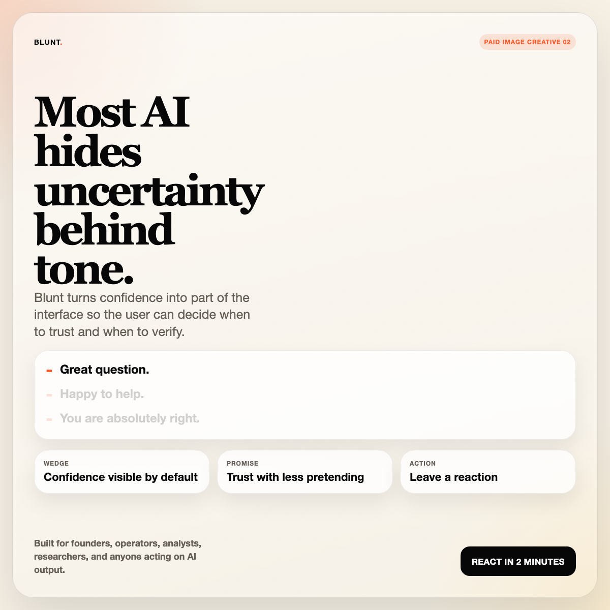
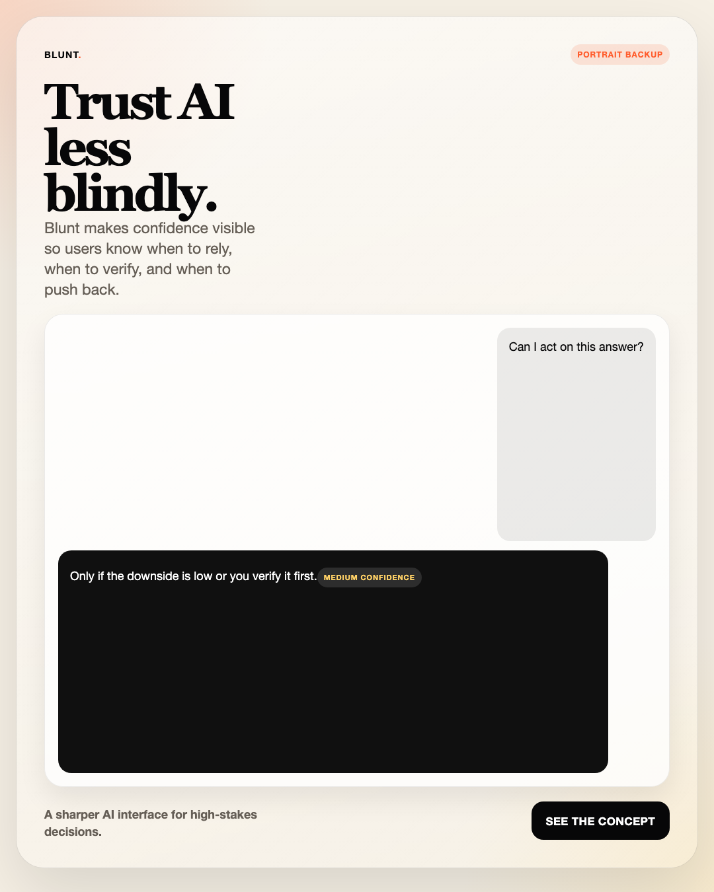

Repo status
Public and current
Launch overview, landing, survey, and assets are publicly reachable on GitHub Pages.
This page is the human-readable overview of the paid launch pack: the live landing, the live survey, the approved creative set, the tracked URLs, and the exact activation steps for X Ads.
Public and current
Launch overview, landing, survey, and assets are publicly reachable on GitHub Pages.
Live
Public paid landing is reachable and designed as the single next-step path from ads.
Live
Concept-reaction survey is reachable and wired as the measurable conversion point.
Activation pending
Asset pack is ready. The remaining dependency is account access, billing, upload, and go-live inside X Ads.
The two URLs that matter during launch morning.
https://zriwia.github.io/blunt-demo/paid/
https://zriwia.github.io/blunt-demo/h10-survey.html
https://zriwia.github.io/blunt-demo/launch/
Creative board and packaging notes for fast reference while uploading.



Use these exact variants inside X Ads so creative performance stays separable.
https://zriwia.github.io/blunt-demo/paid/?src=x-paid&campaign=blunt-launch&v=video-01
https://zriwia.github.io/blunt-demo/paid/?src=x-paid&campaign=blunt-launch&v=image-01
https://zriwia.github.io/blunt-demo/paid/?src=x-paid&campaign=blunt-launch&v=image-02
1. Confirm X Ads account is unlocked and billable.
2. Upload `blunt_manifesto_15s.mp4`, `blunt_ad_square_01.png`, and `blunt_ad_square_02.png`.
3. Paste the tracked URL that matches each creative.
4. Use a traffic / website visits objective.
5. Run the simplest first structure: one audience, one video, two image variants.
6. Watch approvals, landing clicks, survey clicks, and survey submissions in the first hour.
Fastest safe launch pairing from the copy pack.
Video: Primary text 1, headline 1, description 1.
Image 1: Primary text 2, headline 2, description 2.
Image 2: Primary text 3, headline 3, description 3.
Do not optimize for vanity traffic.
If one creative wins CTR clearly, keep it and pause the weakest.
If clicks reach the landing but not the survey, sharpen the hero and CTA.
If survey starts happen but not submissions, reduce friction or inspect comments.
AI should not just answer. It should show how sure it is. Blunt makes confidence visible so people know when to trust, when to verify, and when to push back.
Headline: AI should show how sure it is
Description: See the concept and leave a quick reaction.
The problem with AI is not only accuracy. It is fake certainty. Blunt makes uncertainty visible instead of hiding it in polished wording.
Headline: The AI that will not pretend
Description: Short concept test. Clear product wedge.
What if AI showed its confidence as part of the interface? Blunt is testing whether visible confidence makes AI feel more honest, trustworthy, and useful.
Headline: Visible confidence for AI answers
Description: Explore an AI interface built around visible confidence.
{kind=link}
{kind=link}
{kind=link}